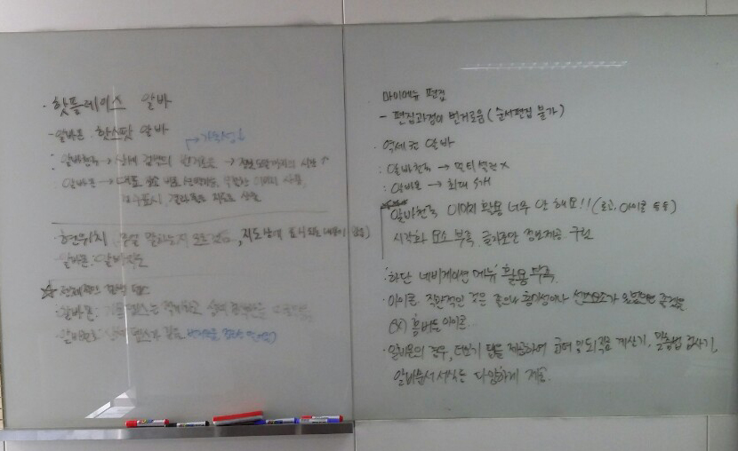
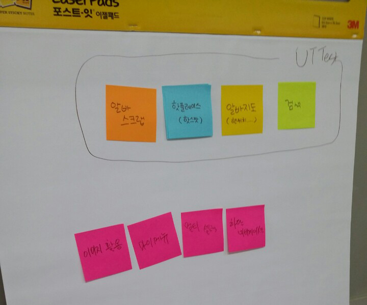

캡스톤 디자인 주간 보고서 [6주차]
| 팀 명 | 11팀 |
|---|---|
| 과제명 | 알바천국 감성 푸쉬 서비스 기획 |
| 회의날짜 | 2016년 10월 4일 ( 10:00 ) ~ 2016년 10월 4일 ( 15:00 ) |
| 참석자 | 성명 | 역할 | 서명 |
|---|---|---|---|
| 안가은 | 회의록 작성, 팀장 | ||
| 김윤신 | 기획 | ||
| 박채원 | 기획 | ||
| 조영지 | 기획 |
| 주간 보고 내용(한주의 내용을 간단하게 정리) |
|---|
|
미디어 윌의 알바천국 회사를 방문하였습니다. 알바천국 관계자 분들과 만나 알바천국 앱의 상세검색 UI 리뉴얼 방향 프레젠테이션 문서를 보고, 간단하게 의견을 나누었습니다. 그 후 저희 팀끼리 알바천국 앱과 경쟁사 알바몬 앱의 UI/UX를 비교해보는 시간을 가졌습니다.   팀끼리 회의 후 포스트잇과 화이트보드를 활용하여 간략하게 장단점을 적어보았습니다. 저희가 꼽은 알바천국 앱의 문제점은 다음과 같습니다.
벤치마킹을 통해 해외 구인구직 앱들의 차별점과 특징을 조사한 저희는 벤치마킹 자료를 참고하여 UXPin을 이용하여 메뉴 구성을 해보았습니다. |
| 다음 진행 방향 및 계획 |
|---|
| 알바천국 회사 방문 및 과제 문서 제출 |
* 주차별 주간 보고서를 필히 제출